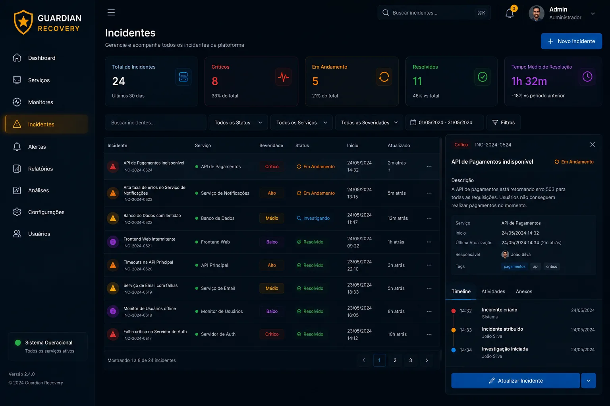
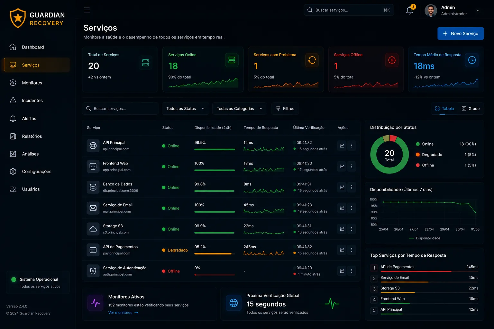

Downtime custa dinheiro. Detecção lenta piora tudo.
Empresas precisam detectar falhas em segundos, acompanhar a disponibilidade de serviços distribuídos e responder a incidentes antes que se tornem indisponibilidade visível ao usuário.
Plataforma enterprise para monitoramento de serviços em tempo real, criação automática de incidentes e recuperação operacional — construída para times que não podem ter downtime.



Empresas precisam detectar falhas em segundos, acompanhar a disponibilidade de serviços distribuídos e responder a incidentes antes que se tornem indisponibilidade visível ao usuário.
O Guardian Recovery consulta serviços em tempo real, executa health checks, mede latência de resposta e abre incidentes automaticamente quando um serviço degrada — reduzindo drasticamente o tempo de resposta.
Backend enterprise — performance, estabilidade e precisão orientada a objetos.
APIs REST para monitoramento, ciclo de vida de incidentes e orquestração de serviços.
Tokens assinados com HMAC-SHA256, rotação de refresh token e controle de acesso por papéis (RBAC).
Armazenamento persistente para incidentes e métricas, com migrações versionadas via Flyway.
Validação de URLs de monitoramento para impedir que o serviço seja usado para acessar redes internas indevidamente.
Limitação de requisições contra abuso, com pipeline de testes e build automatizado via GitHub Actions.
Verificações contínuas de disponibilidade em todos os serviços registrados, com intervalos configuráveis.
Incidentes são criados automaticamente quando serviços ficam fora do ar — sem intervenção manual.
Tempo de resposta, percentual de uptime e status operacional visíveis a qualquer momento.
Permissões de administrador, operador e visualizador, controladas a nível de rota e de recurso.
Validação de URLs monitoradas e rate limiting nas rotas públicas, prevenindo uso indevido da própria plataforma.
Build, testes e migrações Flyway executados automaticamente a cada push, antes de qualquer deploy.
O Guardian Recovery demonstra competência profunda em engenharia backend Java, design de APIs REST, sistemas de monitoramento e fluxos de resposta a incidentes — conceitos usados por plataformas SaaS como PagerDuty e Datadog.
Projetado com escalabilidade e observabilidade em mente, o código segue princípios de arquitetura limpa, com autenticação JWT assinada por HMAC-SHA256, RBAC por papéis, proteção contra SSRF, rate limiting e migrações versionadas via Flyway — testado e construído automaticamente a cada push via GitHub Actions.
Conte o que você precisa e recebemos um diagnóstico gratuito com o melhor caminho — sem compromisso.